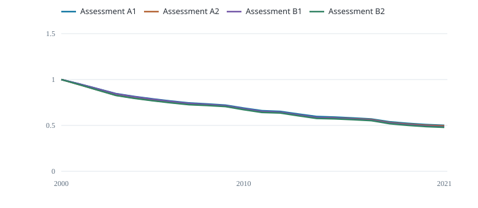

Compare the four fitted biomass trajectories.

Start-of-year biomass / each case’s carrying capacity
Each case has its own fitted carrying capacity. The cases combine two CPUE indices and two fixed growth settings. Their differences are sensitivities, not an uncertainty interval.
| Case | Final year | B / K |
|---|---|---|
| Assessment A1 | 2021 | 0.5011 |
| Assessment A2 | 2021 | 0.4949 |
| Assessment B1 | 2021 | 0.4845 |
| Assessment B2 | 2021 | 0.4792 |